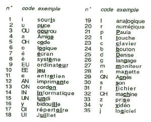

Rody A Ibiza aka Rody et Mastico 7
Bonjour Rody, et bienvenue sur la page officiel du jeu. Il est mis à disposition gratuitement. Si tu veux soutenir le projet et nous remercier, tu peux faire une donation
JOUE EN LIGNE ICI : https://lacrearthur.github.io/RodyAIbiza/WebGLPLayer/index.html
Bugs et retours
Tu trouveras une session dédiée aux bugs où tu peux poster des billets pour les bugs que tu as trouvés, merci d'avance pour tes retours !
Tu peux aussi nous contacter sur twitter et Facebook
La suite
Je pense implémenter un standalone du synthétiseur pour qu'on puisse tous s'amuser avec :)
Il me servira par la suite dans le développement d'un Rody Maker où l'on pourra tous créer des histoires en important 16 images :D
Le synthétiseur
il fonctionne par un système de phonèmes mis bout à bout (plus d'info ici),
chaque phonème a été enregistré à partir des jeux Rody & Mastico originaux,
Voici la liste des phonèmes

Vous pouvez me faire des retour et suggestions pour l'ameliorer :)
J'ai fais un Vlog du développement sur ma page youtube :